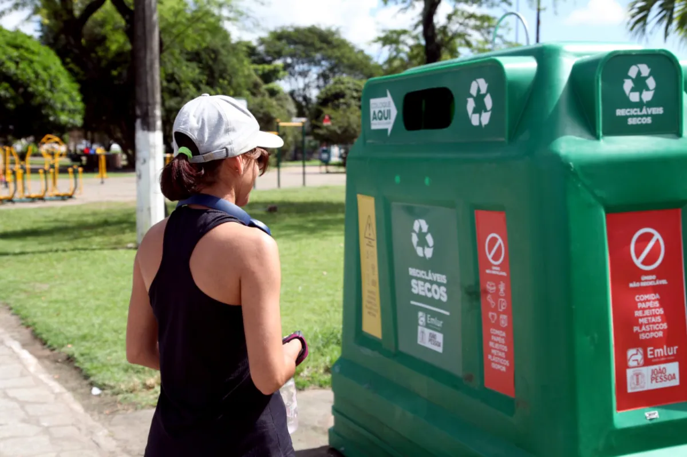

GlobalSolution
Recycle Plastic Points
Programa de Pontos com Reciclagem.
Recicle e acumule pontos, enquanto protege o planeta e nossos oceanos! Nosso objetivo é promover a reciclagem de plásticos coletados nas praias, transformando resíduos em recursos valiosos. Ao participar da nossa plataforma, você contribui diretamente para a limpeza dos mares e a proteção da vida marinha.
13 milhões
toneladas de plástico acabam nos oceanos a cada ano
1%
do alto-mar, apenas, é protegido globalmente.
(Fonte: Fórum Econômico Mundial)
30%
do CO2 produzido pelos seres humanos é absorvido pelos oceanos
(Fonte: ONU)
Recycle Points
Fazendo o cadastro na nossa plataforma, você pode solicitar a retirada do lixo plástico na sua casa ou condominio e ganhar pontos de acordo com a quantidade coletada. Esses pontos podem ser acumulados e trocados por produtos dentro da nossa plataforma.
O material é pesado na hora e você já ganha os pontos direto na sua conta.
Quiosques na Praia
Os quiosques da praia cadastrados na plataforma recebem a cada entrega de plásticos os pontos em dobro na nossa plataforma!
Créditos de Carbono
Você pode converter seus pontos em para créditos de neutralização de carbono. Veja como é facil adotar uma ação de compensasão ambiental.
Entre em contato!

Pontos de Coleta
Uma outra opção para conseguir os creditos é deixando o material direto em nossos postos de coleta.
Nossos pontos de coleta são equipados com são equipados com inteligencia artificial que identifca o material que esta sendo colocado e o peso.
Após o descarte você vc lê com seu celular o QR-code que está e os pontos e logo irão ser creditados na sua conta.
Vídeo Pitch
Apresentação da nossa solução!
Recycle Points
Trabalho em grupo sobre a Global Solution de 2024
Diogo Frota - RM 554374 Ruan Vitor - RM 556200 Manuela de Camargo - RM 552004 Matheus Matos - RM 558530